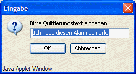

An die 963 gesendete Alarme müssen quittiert werden, als Hinweis darauf, dass der Alarm registriert wurde. Beim Quittieren eines Alarms wird der Bediener aufgefordert, eine Beschreibung der Maßnahme einzugeben, die er als Reaktion auf den Alarm getroffen hat.
So quittieren Sie Alarme:
1 Rufen Sie die Alarme auf, die quittiert werden sollen, wie im Abschnitt „Alarme anzeigen" in dieser Anleitung beschrieben..
2 Klicken Sie auf die entsprechenden Alarme (um mehr als einen Alarm auszuwählen, muss die Taste „Strg" gedrückt sein und die gewünschten Alarme müssen angeklickt werden). Um alle Alarme auszuwählen, klicken Sie auf Alle auswählen, um die Markierung wieder aufzuheben auf Auswahl aufheben.
3 Klicken Sie auf Gewählte Alarme quittieren. Das Dialogfeld Eingabe erscheint nun.

4 Geben Sie in das Feld einen Ihre Maßnahme beschreibenden Text ein, der Ihnen bei einer späteren Fehlersuche helfen kann (z.B. welche Maßnahme aufgrund des Alarms getroffen wurde).
5 Klicken Sie auf OK.
Beachten Sie, dass diese Funktion nur verfügbar ist, wenn man auf den 963 Server im Grafikmodus zugreift.